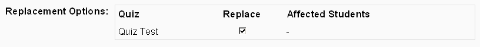

Question versioning is currently disabled until it is re-developed to fix all reported issues.
When questions that were already attempted by a student are edited, it can be important to keep a copy of the question as it was before editing in order to reconstruct the quiz as it was seen by the student. To provide this functionality a question versioning mechanism was implemented.
The first goal, namely keeping around old questions, is easily achieved. They
are just not deleted any more. However, this is not enough; it is also necessary
to store which questions are versions of others. To achieve this goal, there is
an additional table, which stores the versioning information:
quiz_question_versions.
When a question is replaced for which there are already student attempts then
all the attempt data gets associated to the new version of the question and is
re-graded. This requires the question ids in the quiz_attempts,
quiz_states and quiz_newest_states tables to be
replaced by the new id. However we do also want to be able to reconstruct
the quiz the way the student saw it when he gave his answers. For that purpose
the id of the original question is always preserved in the 'originalquestion'
field of the quiz_states table.
If all
old versions of questions are kept around this could horribly clutter the
editing interface. Therefore a field called hidden was added to the
quiz_questions table and all old versions of edited questions are
automatically hidden. When this flag is set to 1 the question is not displayed
in the list of available questions, unless the user chooses to show them.
While the mechanism above should work as described, there is some additional complexity in order to minimise the number of versions created. If a question is created and has not been attempted by a student yet (this excludes teacher previews of the individual question and the quiz!), the database record will be reused (i.e. overwritten) and no new version will be created. This is especially important when the question is created and the first 2 or 3 mistakes are only noticed during preview.
On the editing screen for questions an additional set of options was introduced
(see image).

It shows which quizzes use the edited question and how many students have
attempted it in a particular quiz. Based on this information it is then
possible to choose in which quizzes the new version of the question should be
used and in which ones the old one should remain.
By default the 'replace' checkbox for all quizzes that don't have any students' attempts are checked and in addition, if the question is edited out of a quiz context (i.e. not in the category question list), the 'replace' option is checked for that quiz as well.
The changes to the database structure are limited to an
added field (hidden) in the
quiz_questions table and an additional table called
quiz_question_versions. However, dealing with the
quiz_questions table has become slightly more
complicated.
The hidden field in the quiz_questions table has no
implications for the core functionality. It is only used to determine, as the
name implies, whether the question is shown in the category list or not.
The table quiz_question_versions stores information about the
actual change. This information includes the ids of the old question and the new
question, the id of the user who did the change and a timestamp. Quite
importantly, the id of the quiz, in which the question was replaced is also
stored. This means that the versions table provides a history of the different
states the quiz went through until it was edited to be at the current state. The
information allows to recreate a quiz as it was at any point in time (from a
data perspective - this possibility is not used extensively by the code).
When a question is replaced by a newer version, database records are updated in the order shown below (compare with question.php):
quiz_question_versions
table for each affected quiz (i.e. each quiz in which the question was
replaced).
question field is updated by replacing the old question id with
the new one.
quiz_question_instances table the record that links the
old question to the quiz is also updated to point to the new question.
layout field are changed by replacing the
old id by the new one.
originalquestion field.
questionid field in
quiz_newest_states.
quiz_answers table will have to recode these
ids in all the states to point to the corresponding answers in the
new version. This is handled by the function replace_question_in_attempts()
in the question type class.
Note: This section should still be considered under construction until the question mark behind bug #3311 is taken off.
In the file review.php and potentially also in the file
attempt.php, if a question is edited during a student's
attempt, the data from quiz_question_versions needs to be taken
into account. If a student has attempted a quiz and a question was changed
afterwards (i.e. a new version of that question was created), the question id
of the old version remains in the comma separated list inside the
attempt->layout field. However, since the records in the
quiz_question_instances table get updated, we need to go forward in
the question history, by looping through entries from the
quiz_question_versions table, to find out the id of the question
version that is currently used in the quiz.
Suggestion: With a fairly simple change to the convention of what is stored in
the quiz_question_versions table we could get rid of the
requirement of looping through all the versions. If in the newquestion field we
store the id of the question that is currently used in the quiz, it would be
possible to get the complete history for a question quite simply by selecting by
quiz id and newquestion.
It should be fairly simple to write an upgrade script for this change.
Additionally, another set_field would need to be added to
question.php to change the newquestion field to
the new question id. The benefits would be a much simpler handling of the
question history, resulting in more efficient code than the current fix for bug
#3311 in review.php.
The place where all the versioning actually takes place is question.php. Here the changes described in Adjustments to the Data are carried out.
Obviously the backup and restore scripts also take
quiz_question_versions into account, however, they don't need to be
concerned with the ways the data is used.